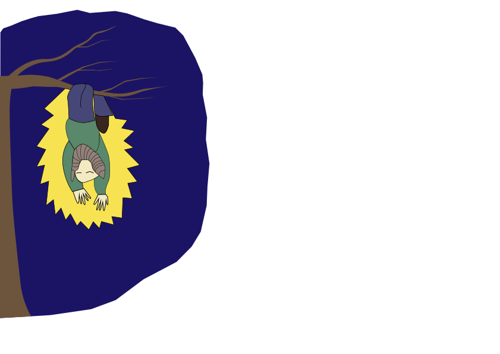
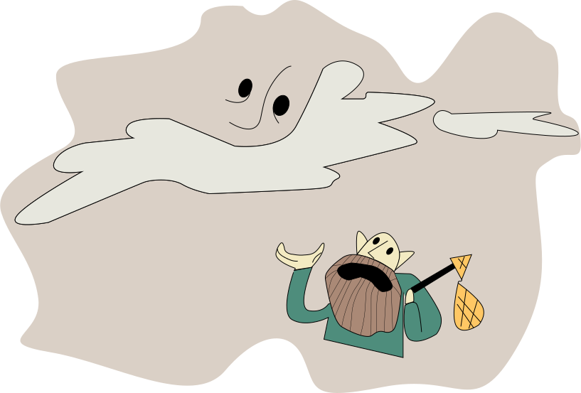

Very well, then. And so it shall be!
But always check in with your energy.
As from here to the South Pole and farther up north,
You’ll still come across a struggling dwarf.
During the night, when submerged in his dream,
A dwarf emanates such a radiant gleam.
Snoring, he hangs from a tree, upside down,
But what if he does so with passionate frown?
Take care not to wake him, but from down below,
Whisper, ‘Oh Dwarfy, why glow you so?’
The answer will come to you per intuition,
And you will help bring Dwarfy’s dream to fruition!
It is much like where we live; what humans should know:
A dwarf needs to see a direction to go.
It is not that he’s run out of positive visions,
But that Dwarfland just keeps weighing down his ambitions.
And the mountain that once was the dwarfs’ sacred home
Was restructured to serve as their enemies’ dome.
Dwarfy called onto Yahweh, “Oh almighty Sir,
Are you partial or what to allow such a stir?
Yes, I know that I failed to give praise to each bee,
But I hereby dismiss this old contract with Thee.”
So the dwarfs crossed through marshlands with slippery stones
To a moor where there’s peace and the trees look like bones.
Then a dwarf raised his hand and announced to the crew:
“I think that these trees for our beds will just do.”
They install themselves hanging, and during the night
Something comes through that is lucid and bright:
A dreamworld battlefield of some kind
Where you fight so as to get your purpose aligned.
You'll approach him like this: “You’ve been wronged, now you’re found,
But how long does it take for a change to come round!
“I have one older sister; she is strong in her heart
And I’m sure she would tell you the ways of her art.”
Now what intuition comes to you?
Why's Dwarfy’s heart so clenched and blue?
Please click on appropriate answer to unlock next level.